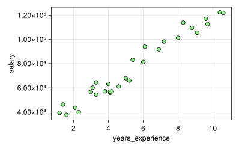
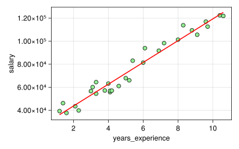

import MLJ:fit!,match,predict,table,fitted_params
using CSV,DataFrames,Tidier,Pipe
using CairoMakie,AlgebraOfGraphics,MakieThemes
using MLJ,StatsBase4 Salary dataset Linear Regression
info
1. load package
2. load data
df=CSV.File("../../data/salary_dataset.csv")|>DataFrame
first(df,5)5×3 DataFrame
| Row | Column1 | YearsExperience | Salary |
|---|---|---|---|
| Int64 | Float64 | Float64 | |
| 1 | 0 | 1.2 | 39344.0 |
| 2 | 1 | 1.4 | 46206.0 |
| 3 | 2 | 1.6 | 37732.0 |
| 4 | 3 | 2.1 | 43526.0 |
| 5 | 4 | 2.3 | 39892.0 |
3. data processing
df=@chain df begin
@clean_names
@select(Not(1))
#coerce(_,:years_experience=>Continuous,:salary=>Continuous)
end
schema(df)┌──────────────────┬────────────┬─────────┐ │ names │ scitypes │ types │ ├──────────────────┼────────────┼─────────┤ │ years_experience │ Continuous │ Float64 │ │ salary │ Continuous │ Float64 │ └──────────────────┴────────────┴─────────┘
ax=(width=400,height=250)
plt1=data(df)*mapping(:years_experience,:salary)*visual(Scatter,color=:lightgreen,strokewidth=1,strokecolor=:black)
fg=draw(plt1,axis=ax)
X=MLJ.table(reshape(df[:,1],30,1))
y=Vector(df[:,2])
show(y)[39344.0, 46206.0, 37732.0, 43526.0, 39892.0, 56643.0, 60151.0, 54446.0, 64446.0, 57190.0, 63219.0, 55795.0, 56958.0, 57082.0, 61112.0, 67939.0, 66030.0, 83089.0, 81364.0, 93941.0, 91739.0, 98274.0, 101303.0, 113813.0, 109432.0, 105583.0, 116970.0, 112636.0, 122392.0, 121873.0]4. MLJ workflow
4.1 load model
LinearRegressor = @load LinearRegressor pkg=MLJLinearModels
model=LinearRegressor()import MLJLinearModels ✔LinearRegressor(
fit_intercept = true,
solver = nothing)4.2 fitting model
mach = MLJ.fit!(machine(model,X,y))trained Machine; caches model-specific representations of data
model: LinearRegressor(fit_intercept = true, …)
args:
1: Source @172 ⏎ Table{AbstractVector{Continuous}}
2: Source @583 ⏎ AbstractVector{Continuous}4.3 getting params
fp=MLJ.fitted_params(mach)
a=fp.coefs[1,1][2]
b=fp.intercept
f(t)=a*t+bf (generic function with 1 method)5 plot fit line
xspan=range(extrema(df[:,1])...,200)
ys=f.(xspan)
datalayer2=data((years_experience=xspan,salary=ys))
maplayer2=mapping(:years_experience,:salary)
vislayer2=visual(Lines,color=:red,linewidth=2)
plt2=datalayer2*maplayer2*vislayer2
draw(plt1+plt2,axis=ax)